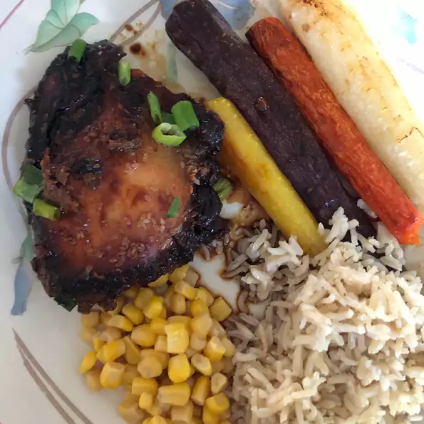

Slow Cooker Sesame Chicken Thighs

the ingredientes
- ⅓ cup packed brown sugar
- ½ cup soy sauce
- 3 tablespoons sesame seeds
- 2 tablespoons dry sherry
- 2 tablespoons ketchup
- ½ teaspoon garlic powder
- ½ teaspoon ground ginger
- 1 pound skinless, boneless chicken thighs
directions
- Mix brown sugar, soy sauce,
sesame seeds, sherry, ketchup,
garlic powder, and ginger together
in a bowl.
- Place chicken thighs in the bottom of a slow cooker
. Pour sauce over top.
- Cover and cook until chicken is no longer pink in the center
and juices run clear, on Low, 6 to 8 hours, or High, 3 to 4 hours.
An instant-read thermometer inserted into the center should read
at least 165 degrees F (74 degrees C).